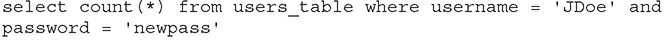
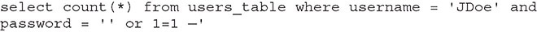

Table of Contents for
CompTIA Security+ All-in-One Exam Guide, Sixth Edition (Exam SY0-601)), 6th Edition
- Cover (01:09 mins)
- Title Page (01:09 mins)
- Copyright Page (03:27 mins)
- Dedication (01:09 mins)
- About the Authors (04:36 mins)
- Contents (19:33 mins)
- Preface (02:18 mins)
- Acknowledgments (01:09 mins)
- Introduction (12:39 mins)
-
Part I Threats, Attacks, and Vulnerabilities (01:09 mins)
- Chapter 1 Social Engineering Techniques (35:39 mins)
- Chapter 2 Type of Attack Indicators (37:57 mins)
- Chapter 3 Application Attack Indicators (33:21 mins)
- Chapter 4 Network Attack Indicators (39:06 mins)
- Chapter 5 Threat Actors, Vectors, and Intelligence Sources (44:51 mins)
- Chapter 6 Vulnerabilities (31:03 mins)
- Chapter 7 Security Assessments (23:00 mins)
- Chapter 8 Penetration Testing (25:18 mins)
-
Part II Architecture and Design (01:09 mins)
- Chapter 9 Enterprise Security Architecture (26:27 mins)
- Chapter 10 Virtualization and Cloud Security (25:18 mins)
- Chapter 11 Secure Application Development, Deployment, and Automation Concepts (27:36 mins)
- Chapter 12 Authentication and Authorization (33:21 mins)
- Chapter 13 Cybersecurity Resilience (39:06 mins)
- Chapter 14 Embedded and Specialized Systems (41:24 mins)
- Chapter 15 Physical Security Controls (49:27 mins)
- Chapter 16 Cryptographic Concepts (42:33 mins)
-
Part III Implementation (01:09 mins)
- Chapter 17 Secure Protocols (20:42 mins)
- Chapter 18 Host and Application Security (46:00 mins)
- Chapter 19 Secure Network Design (67:51 mins)
- Chapter 20 Wireless Security (25:18 mins)
- Chapter 21 Secure Mobile Solutions (43:42 mins)
- Chapter 22 Implementing Cloud Security (24:09 mins)
- Chapter 23 Identity and Account Management Controls (33:21 mins)
- Chapter 24 Implement Authentication and Authorization (37:57 mins)
- Chapter 25 Public Key Infrastructure (55:12 mins)
- Part IV Operations and Incident Response (01:09 mins)
- Part V Governance, Risk, and Compliance (01:09 mins)
- Part VI Appendixes and Glossary (01:09 mins)
- Glossary (65:33 mins)
- Index (67:51 mins)
CHAPTER 3
Application Attack Indicators
In this chapter, you will
• Explore various attack patterns
• Connect attack indicators to a specific form of attack
This chapter examines the types of attacks and their attributes, with the objective of demonstrating how one can connect the dots between a series of potential attack indicators and a specific type of application attack.
Certification Objective This chapter covers CompTIA Security+ exam objective 1.3: Given a scenario, analyze potential indicators associated with application attacks.
Privilege Escalation
A cyberattack is a multistep process. Most attacks begin at a privilege level associated with an ordinary user. From this level, the attacker exploits vulnerabilities that enable them to achieve root- or admin-level access. This step in the attack chain is called privilege escalation and is essential for many attack efforts.
There are a couple of ways to achieve privilege escalation. One way is to use existing privileges to perform an action that steals a better set of credentials. You can obtain “better” credentials by using sniffers to grab credentials or by getting the Windows Security Account Manager (SAM) or the Linux/Unix etc/passwd file. Another method is by exploiting vulnerabilities or weaknesses in processes that are running with escalated privileges. Injecting malicious code into these processes can also achieve escalated privilege.

EXAM TIP Blocking privilege escalation is an important defensive step in a system. This is the rationale behind Microsoft’s recent reduction in processes and services that run in elevated mode. This greatly reduces the attack surface available to an attacker to perform this essential task.
Cross-Site Scripting
Cross-site scripting (XSS) is one of the most common web attack methodologies. The cause of the vulnerability is weak user input validation. If input is not validated properly, an attacker can include a script in their input and have it rendered as part of the web process. There are several different types of XSS attacks, which are distinguished by the effect of the script:
• Non-persistent XSS attack The injected script is not persisted or stored but rather is immediately executed and passed back via the web server.
• Persistent XSS attack The script is permanently stored on the web server or some back-end storage. This allows the script to be used against others who log in to the system.
• DOM-based XSS attack The script is executed in the browser via the Document Object Model (DOM) process as opposed to the web server.
Cross-site scripting attacks can result in a wide range of consequences, and in some cases, the list can be anything that a clever scripter can devise. Here are some common uses that have been seen in the wild:
• Theft of authentication information from a web application
• Session hijacking
• Deploying hostile content
• Changing user settings, including future users
• Impersonating a user
• Phishing or stealing sensitive information
Controls to defend against XSS attacks include the use of anti-XSS libraries to strip scripts from the input sequences. Various other ways to mitigate XSS attacks include limiting the types of uploads, screening the size of uploads, and whitelisting inputs. However, attempting to remove scripts from inputs can be a tricky task. Well-designed anti-XSS input library functions have proven to be the best defense. Cross-site scripting vulnerabilities are easily tested for and should be a part of the test plan for every application. Testing a variety of encoded and unencoded inputs for scripting vulnerability is an essential test element.
EXAM TIP Input validation is helpful at preventing XSS attacks.

NOTE Input validation, also commonly known as data validation, is the structured and proper testing of any input that is supplied by an application or user. Input validation prevents improperly formed (malformed) data from entering a system.
Injection Attacks
User input without input validation results in an opportunity for an attacker to craft input to create specific events that occur when the input is parsed and used by an application. Structured Query Language (SQL) injection attacks involve the manipulation of input, resulting in a SQL statement that is different from the statement the designer intended. Extensible Markup Language (XML) injection attacks and Lightweight Directory Access Protocol (LDAP) injection attacks are performed in the same fashion. Because SQL, XML, and LDAP are used to store data, this can give an attacker access to data against business rules. Command injection attacks can occur when input is used in a fashion that allows command-line manipulation. This can give an attacker command-line access at the privilege level of the application.
Structured Query Language (SQL)
A SQL injection attack is a form of code injection aimed at any SQL-based database, regardless of vendor. An example of this type of attack is where the function takes the user-provided inputs for username and password and substitutes them in a where clause of a SQL statement with the express purpose of changing the where clause into one that gives a false answer to the query.
For example, assume the desired SQL statement is as follows:

The values JDoe and newpass are provided by the user and are simply inserted into the string sequence. Though seemingly safe functionally, this can be easily corrupted by using the sequence
' or 1=1 —
which changes the where clause to one that returns all records, as shown here:

The addition of the or clause, with an always true statement and the beginning of a comment line to block the trailing single quote, alters the SQL statement to one in which the where clause is rendered inoperable. If the where clause is altered to return all records, this can result in a data breach.
Stored procedures are precompiled methods implemented within a database engine. Stored procedures act as a secure coding mechanism because they isolate user input from the actual SQL statements being executed. This is the primary defense mechanism against SQL injection attacks—in other words, separation of user input from the SQL statements. User-supplied input data is essential in interactive applications that use databases; these types of applications allow the user to define the specificity of search, match, and so on. But what cannot happen is to allow a user to write the actual SQL code that is executed—too many things could go wrong, and it provides the user with too much power to be allowed wield it directly. Therefore, eliminating SQL injection attacks by “fixing” input has never worked.
All major database engines support stored procedures. Stored procedures have a performance advantage over other forms of data access. The downside is that stored procedures are written in another language, SQL, and typically need a database programmer to implement the more complex ones.
EXAM TIP Stored procedures are the gold standard for preventing SQL injection attacks and are specifically mentioned in the Security+ objectives.
Dynamic-Link Library (DLL)
A dynamic-link library (DLL) is a piece of code that can add functionality to a program through the inclusion of library routines linked at runtime. DLL injection is the process of adding to a program, at runtime, a DLL that has a specific function vulnerability that can be capitalized upon by the attacker. A good example of this is Microsoft Office, a suite of programs that use DLLs loaded at runtime. Adding an “evil” DLL in the correct directory, or via a registry key, can result in additional functionality being incurred.
Lightweight Directory Access Protocol (LDAP)
LDAP-based systems are also subject to injection attacks. When an application constructs an LDAP request based on user input, a failure to validate the input can lead to a bad LDAP request. Just as SQL injection can be used to execute arbitrary commands in a database, LDAP injection can do the same in a directory system. Something as simple as a wildcard character (*) in a search box can return results that would normally be beyond the scope of a query. Proper input validation is important before a request is passed to an LDAP engine.
Extensible Markup Language (XML)
XML can be tampered with via injection as well. XML injections can be used to manipulate an XML-based system. Because XML is nearly ubiquitous in the web application world, this form of attack has a wide range of targets. XML that is maliciously altered can affect changes in configurations, changes in data streams, changes in outputs—all from the injection.
EXAM TIP For the exam, you should understand injection-type attacks and how they manipulate the systems they are injecting, including SQL, DLL, LDAP, and XML.
Pointer/Object Dereference
Some computer languages use a construct referred to as a pointer, a construct that refers to the memory location that holds the variable, as opposed to a variable, where the value is stored directly in the memory location. To get the value at the memory location denoted by a pointer variable, one must dereference the pointer. The act of dereferencing a pointer now changes the meaning of the object to the contents of the memory location, not the memory location as identified by the pointer. Pointers can be very powerful and allow fast operations across a wide range of structures. However, they can also be dangerous, as mistakes in their use can lead to unexpected consequences. When a programmer uses user input in concert with pointers, for example, this lets the user pick a place in an array and use a pointer to reference the value. Mistakes in the input validation can lead to errors in the pointer dereference, which may or may not trigger an error, as the location will contain data and it will be returned. Because the pointer is connected to an object, CompTIA Security+ refers to this topic as pointer/object dereference, as dereferencing the pointer causes a dereference to the object.
Directory Traversal
A directory traversal attack is when an attacker uses special inputs to circumvent the directory tree structure of the filesystem. Adding encoded symbols for “../..” in an unvalidated input box can result in the parser resolving the encoding to the traversal code, bypassing many detection elements, and passing the input to the filesystem. The program then executes the commands in a different location than designed. When combined with a command injection, the input can result in the execution of code in an unauthorized manner. Classified as input validation errors, these can be difficult to detect without doing code walkthroughs and specifically looking for them. This illustrates the usefulness of the CWE Top 25 Most Dangerous Software Errors checklist during code reviews because it alerts developers to this issue during development.
Directory traversals can be masked by using the encoding of input streams. If the security check is done before the string is decoded by the system parser, then recognition of the attack form may be impaired. There are many ways to represent a particular input form, the simplest of which is the canonical form (see Chapter 11 for an example: “A Rose Is a Rose Is a r%6fse”). Parsers are used to render the canonical form for the operating system (OS), but these embedded parsers may act after input validation, making it more difficult to detect certain attacks from just matching a string.
Buffer Overflow
If there’s one item that could be labeled as the “most wanted” in coding security, it would be the buffer overflow. The CERT/CC at Carnegie Mellon University estimates that nearly half of all exploits of computer programs stem historically from some form of buffer overflow. Finding a vaccine to buffer overflows would stamp out half of these security-related incidents by type, and probably 90 percent by volume. The Morris finger worm in 1988 was an exploit of an overflow, as were more recent big-name events such as Code Red and Slammer. The generic classification of buffer overflows includes many variants, such as static buffer overruns, indexing errors, format string bugs, Unicode and ANSI buffer size mismatches, and heap overruns.
The concept behind these vulnerabilities is relatively simple. The input buffer that is used to hold program input is overwritten with data that is larger than the buffer can hold. The root cause of this vulnerability is a mixture of two things: poor programming practice and programming language weaknesses. For example, what would happen if a program that asks for a seven- to ten-character phone number instead receives a string of 150 characters? Many programs will provide some error checking to ensure that this will not cause a problem. Some programs, however, cannot handle this error, and the extra characters continue to fill memory, overwriting other portions of the program. This can result in a number of problems, including causing the program to abort or the system to crash. Under certain circumstances, the program can execute a command supplied by the attacker. Buffer overflows typically inherit the level of privilege enjoyed by the program being exploited. This is why programs that use root-level access are so dangerous when exploited with a buffer overflow, as the code that will execute does so at root-level access.
Programming languages such as C were designed for space and performance constraints. Many functions in C, like gets(), are unsafe in that they will permit unsafe operations, such as unbounded string manipulation into fixed buffer locations. The C language also permits direct memory access via pointers, a functionality that provides a lot of programming power but carries with it the burden of proper safeguards being provided by the programmer.
EXAM TIP Buffer overflows can occur in any code, and code that runs with privilege has an even greater risk profile. In 2014, a buffer overflow in the OpenSSL library, called Heartbleed, left hundreds of thousands of systems vulnerable and exposed critical data for millions of users worldwide.
Buffer overflows are input validation attacks, designed to take advantage of input routines that do not validate the length of inputs. Surprisingly simple to resolve, all that is required is the validation of all input lengths prior to writing to memory. This can be done in a variety of manners, including the use of safe library functions for inputs. This is one of the vulnerabilities that has been shown to be solvable, and in fact the prevalence is declining substantially among major security-conscious software firms.
Race Condition
A race condition is an error condition that occurs when the output of a function is dependent on the sequence or timing of the inputs. It becomes a bug when the inputs do not happen in the order the programmer intended. The term race condition relates to the idea of multiple inputs racing each other to influence the output first. Race conditions can occur in multithreaded or distributed programs when the sequence or timing of processes or threads is important for the program to operate properly. A classic race condition is when one thread depends on a value (A) from another function that is actively being changed by a separate process. The first process cannot complete its work until the second process changes the value of A. If the second function is waiting for the first function to finish, a lock is created by the two processes and their interdependence. These conditions can be difficult to predict and find. Multiple unsynchronized threads, sometimes across multiple systems, create complex logic loops for seemingly simple atomic functions. Understanding and managing record locks is an essential element in a modern, diverse object programming environment.
Race conditions are defined by race windows, a period of opportunity when concurrent threads can compete in attempting to alter the same object. The first step to avoid race conditions is to identify the race windows. Then, once the windows are identified, the system can be designed so that they are not called concurrently, a process known as mutual exclusion. The impact of a race condition is usually the failure of a system in the form of a crash. Race conditions can be combated with reference counters, kernel locks, and thread synchronization. Reference counters are structures in the kernel that detail whether or not a resource is actively being used at the current moment. Locking the kernel was an early method, but it causes performance issues. Thread synchronization prevents threads from accessing the shared data at the same time.
Another timing issue is the infinite loop. When program logic becomes complex—for instance, date processing for leap years—care should be taken to ensure that all conditions are covered and that errors and other loop-breaking mechanisms do not allow the program to enter a state where the loop controls will fail. Failure to manage this exact property resulted in Microsoft Zune devices failing when they were turned on in a new year following a leap year. The control logic entered a sequence where a loop would not be satisfied, resulting in the device crashing by entering an infinite loop and becoming nonresponsive.
EXAM TIP Race conditions can be used for privilege elevation and denial-of-service attacks. Programmers can use reference counters, kernel locks, and thread synchronization to prevent race conditions.
Time of Check/Time of Use
In today’s multithreaded, concurrent operating model, it is possible for different systems to attempt to interact with the same object at the same time. It is also possible for events to occur out of sequence based on timing differences between different threads of a program. Sequence and timing issues such as race conditions and infinite loops influence both the design and implementation of data activities. Understanding how and where these conditions can occur is important to members of the development team. In technical terms, what develops is known as a race condition, or from the attack point of view, the system is vulnerable to a time of check/time of use (TOC/TOU) attack.
EXAM TIP A time of check/time of use attack is one that takes advantage of a separation between the time a program checks a value and when it uses the value, allowing an unauthorized manipulation that can affect the outcome of a process.
Improper Error Handling
Every application will encounter errors and exceptions, and these need to be handled in a secure manner. One attack methodology includes forcing errors to move an application from normal operation to exception handling. During an exception, it is common practice to record/report the condition, typically in a log file, including supporting information such as the data that resulted in the error. This information can be invaluable in diagnosing the cause of the error condition. The challenge is in where this information is captured. The best method is to capture it in a log file, where it can be secured by an access control list (ACL). The worst method is to echo the information to the user. Echoing error condition details to users can provide valuable information to attackers when they cause errors on purpose.
Improper error handling can lead to a wide range of disclosures. Errors associated with SQL statements can disclose data structures and data elements. Remote procedure call (RPC) errors can give up sensitive information such as filenames, paths, and server names. Programmatic errors can disclose line numbers that an exception occurred on, the method that was invoked, and information such as stack elements. Attackers can use the information they gather from errors to further their attack on a system, as the information typically gives them details about the composition and inner workings of the system that they can exploit.
Improper Input Handling
Improper input handling is the true number-one cause of software vulnerabilities. Improper input handling or input validation is the root cause behind most overflows, injection attacks, and canonical structure errors. Users have the ability to manipulate input, so it is up to the developer to handle the input appropriately to prevent malicious entries from having an effect. Buffer overflows (discussed earlier in the chapter) have long been recognized as a class of improper input handling. Newer input handling attacks include canonicalization attacks and arithmetic attacks. Probably the most effective defensive mechanism you can employ is input validation. Considering all inputs to be hostile until properly validated can mitigate many attacks based on common vulnerabilities. This is a challenge, as the validation efforts need to occur after all parsers have completed manipulating input streams, a common function in web-based applications using Unicode and other international character sets.
Input validation is especially well suited for the following vulnerabilities: buffer overflow, reliance on untrusted inputs in a security decision, cross-site scripting (XSS), cross-site request forgery (XSRF), path traversal, and incorrect calculation of buffer size. Input validation may seem suitable for various injection attacks, but given the complexity of the input and the ramifications from legal but improper input streams, this method falls short for most injection attacks. What can work is a form of recognition and whitelisting approach, where the input is validated and then parsed into a standard structure that is then executed. This restricts the attack surface to not only legal inputs but also expected inputs.
The impact of improper input handling can be catastrophic, allowing an attacker to either gain a foothold on a system or increase their level of privilege. Because this type of error is dependent upon the process being attacked, the results can vary but almost always lead to attackers advancing their kill chain.
EXAM TIP Input validation is especially well suited for the following vulnerabilities: buffer overflow, reliance on untrusted inputs in a security decision, cross-site scripting (XSS), cross-site request forgery (XSRF), path traversal, and incorrect calculation of buffer size. When taking the Security+ exam, look for questions that address a large number of related problems with a common potential cause.
Replay Attacks
Replay attacks work against applications by attempting to re-create the conditions that existed the first time the sequence of events occurred. If an attacker can record a series of packets and then replay them, what was valid before may well be valid again. An example of this would be repeating the previous set of transactions, like getting paid twice or successfully passing a security check at a login event. There is a wide range of defenses against replay attacks, and as such this type of attack should not be an issue. However, developers who do not follow best practices can create implementations that lack replay protections, enabling this attack path to persist.
Session Replay
When a user connects to a system via the web, the connection forms a “session” in the respect that the various elements that are transmitted back and forth form a conversation between the client and the server. A session replay event is the re-creation of this interaction after it has occurred. This can be a good or a bad thing, depending on the circumstances. If the session is a transaction between the user and a bank, the ability to replay (that is, re-create) the session after the fact would be a bad thing. So for transactional systems, replay prevention is important and needs to be built into the system. For other web interactions, replay can provide information as to what is or isn’t working on a web-based client/server interaction basis.
For replay to work, there needs to be instrumentation because most of the content and transactions are stateless by themselves, in that they don’t have the information of where the user came from or where they went. Replay can be managed from either the client side or the server side, each having advantages and disadvantages. The server side can be captured based on history of requests, but won’t show the mouse movements and such of client-only activity. On client side, tags allow you to capture details of pages. But like all client-side solutions, any data coming from a client is subject to blocking and manipulation.
Integer Overflow
An integer overflow is a programming error condition that occurs when a program attempts to store a numeric value, which is an integer, in a variable that is too small to hold it. The results vary by language and numeric type. In some cases, the value saturates the variable, assuming the maximum value for the defined type and no more. In other cases, especially with signed integers, it can roll over into a negative value because the most significant bit is usually reserved for the sign of the number. This can create significant logic errors in a program.
Integer overflows are easily tested for, and static code analyzers can point out where they are likely to occur. Given this, there is no excuse for having these errors end up in production code.
Request Forgery
Request forgery is a class of attack where a user performs a state-changing action on behalf of another user, typically without their knowledge. It is like having someone else add information to your web responses. These attacks utilize the behavioral characteristics of web-based protocols and browsers, and they occur because of client-side issues but they can be seen on both the server side and the client side.
Server-Side Request Forgery
Server-side request forgery is when an attacker sends requests to the server-side application to make HTTP requests to an arbitrary domain of the attacker’s choosing. These attacks exploit the trust relationship between the server and the target, forcing the vulnerable application to perform unauthorized actions. The typical trust relationships exploited are those that exist in relation to the server itself, or in relation to other back-end systems within the same organization. Common attacks include having the server attack itself or attack another server in the organization.
Cross-Site Request Forgery
Cross-site request forgery (XSRF) attacks utilize unintended behaviors that are proper in defined use but are performed under circumstances outside the authorized use. This is an example of a “confused deputy” problem, a class of problems where one entity mistakenly performs an action on behalf of another. An XSRF attack relies upon several conditions to be effective. It is performed against sites that have an authenticated user and exploits the site’s trust in a previous authentication event. Then, by tricking a user’s browser into sending an HTTP request to the target site, the trust is exploited. Assume your bank allows you to log in and perform financial transactions but does not validate the authentication for each subsequent transaction. If a user is logged in and has not closed their browser, then an action in another browser tab could send a hidden request to the bank, resulting in a transaction that appears to be authorized but in fact was not done by the user.
EXAM TIP There are two different types of request forgeries: server-side request forgery and cross-site request forgery. Given a scenario, be sure you can distinguish them based on a description of what has happened.
Many different mitigation techniques can be employed, from limiting authentication times, to cookie expiration, to managing specific elements of a web page (for example, header checking). The strongest method is the use of random XSRF tokens in form submissions. Subsequent requests cannot work because a token was not set in advance. Testing for XSRF takes a bit more planning than for other injection-type attacks, but this, too, can be accomplished as part of the design process.
Application Programming Interface (API) Attacks
The “normal” method of interacting with a web service is via a series of commands that are executed on the server, with the results sent back to the application—the browser. However, with the rise of smartphones, tablets, and other mobile devices came the application. An application (or app) typically interfaces with the service via an application programming interface (API). As with all entry points, APIs are subject to attack and abuse. An application programming interface attack is one where an attacker specifically attacks the API and the service behind it by manipulating inputs. APIs for web services require at a minimum the same level of security concern as a standard web interface, but in some cases, they may require an enhanced level. The reasoning behind enhanced levels is simple: APIs are used to feed data to an application, so some of the processing is done in the application. This means that the interface is more of a raw feed into the server, with less work, and less checking, done on the server. API interfaces that are not monitored or moderated on the server side can result in data breaches and data disclosures, among other security risks.
Resource Exhaustion
All systems are defined as a process that creates specific outputs as a result of a defined set of inputs. The internals of the system use a variety of resources to achieve the transition of input states to output states. Resource exhaustion is the state where a system does not have all of the resources it needs to continue to function. Two common resources are capacity and memory, which are interdependent in some scenarios but completely separate in others. Capacity is defined by a system having the necessary amount of communication bandwidth, processing bandwidth, and memory to manage intermediate states. When one of these resources becomes exhausted, failure can ensue. For instance, if a system has more TCP SYN requests than it can handle, it fails to complete handshakes and enable additional connections. If a program runs out of memory, it will fail to operate correctly. This is an example of a resource exhaustion attack, where the attack’s aim is to deplete resources.
EXAM TIP Like race conditions, resource exhaustion vulnerabilities tend to result in a system crash. These attacks can result in less damage, but from the aspect of an attacker advancing persistence as a strategy, it’s necessary to change system functions as part of an overall attack strategy. However, in some cases, the outages can stop essential services, including customer-facing systems.
Memory Leak
Memory management encompasses the actions used to control and coordinate computer memory, assigning memory to variables, and reclaiming it when no longer being used. Errors in memory management can result in a memory leak, which can grow over time, consuming more and more resources. A garbage collection routine is used to clean up memory that has been allocated in a program but is no longer needed. In the C programming language and in C++, where there is no automatic garbage collector, the programmer must allocate and free memory explicitly. One of the advantages of newer programming languages such as Java, C#, Python, and Ruby is that they provide automatic memory management with garbage collection. This may not be as efficient as specifically coding in C, but it is significantly less error prone.
Secure Sockets Layer (SSL) Stripping
Secure sockets layer (SSL) stripping is a man in the middle attack against all SSL and early versions of TLS connections. The attack is performed anywhere a man in the middle attack can happen, which makes wireless hotspots a prime location. The attack works by intercepting the initial connection request for HTTPS, redirecting it to an HTTP site, and then mediating in the middle. The reason the attack works is because the beginning of an SSL or TLS (v1.0 or v1.1) handshake is vulnerable to attack. The main defense is technical: only use TLS 1.2 or 1.3, as these versions have protections against the specific attack method.
Driver Manipulation
Drivers are pieces of software that sit between the operating system and a peripheral device. In one respect, drivers are a part of the OS, as an extension. In another respect, drivers are code that is not part of the OS and are developed by firms other than the OS developer. Driver manipulation is an attack on a system by changing drivers, thus changing the behavior of the system. Drivers may not be as protected as other parts of the core system, yet they join it when invoked. This has led to drivers being signed and significantly tightening up the environment of drivers and ancillary programs.
Shimming
Shimming is a process of putting a layer of code between the driver and the OS. Shimming allows flexibility and portability by enabling changes between different versions of an OS without modifying the original driver code. Shimming also represents a means by which malicious code can change a driver’s behavior without changing the driver itself.
Refactoring
Refactoring is the process of restructuring existing computer code without changing its external behavior. Refactoring is done to improve nonfunctional attributes of the software, such as improving code readability and/or reducing complexity. Refactoring can uncover design flaws that lead to exploitable vulnerabilities, allowing these to be closed without changing the external behavior of the code. Refactoring is a means by which an attacker can add functionality to a driver yet maintain its desired functionality. Although this goes against the original principle of refactoring—improving code efficiency—it speaks to the ingenuity of attackers.
EXAM TIP For the exam, remember that shimming is a process of putting a layer of code between the driver and the OS and that refactoring is the process of restructuring existing computer code without changing its external behavior.
Pass the Hash
Pass the hash is a hacking technique where the attacker captures the hash used to authenticate a process. They can then use this hash by injecting it into a process in place of the password. This is a highly technical attack that targets the Windows authentication process by injecting a copy of the password hash directly into the system. The attacker does not need to know the password, but instead can use a captured hash and inject it directly, which when correctly verified will grant the attacker access. As this is a very technically specific hack, tools have been developed to facilitate its operation.
Chapter Review
This chapter presented material associated with application attacks. The chapter opened with a discussion of privilege escalation and cross-site scripting and then followed with injection attacks, including SQL, DLL, LDAP, and XML variants. The next topics covered were pointer/object dereferencing and directory traversals. Buffer overflows, race conditions, and improper error handling followed, and then the chapter addressed improper input handling. The attack methods of replay attacks, integer overflows, and request forgeries were also covered. Under request forgeries, server-side and cross-site variants were covered.
Attacks on API interfaces, resource exhaustion, and memory leaks were covered. In addition, the man in the middle method of SSL stripping as well as driver manipulation through shimming and refactoring were covered. The chapter closed with a discussion of the pass-the-hash attack.
Questions
To help you prepare further for the CompTIA Security+ exam, and to test your level of preparedness, answer the following questions and then check your answers against the correct answers at the end of the chapter.
1. When an attacker captures network traffic and retransmits it at a later time, what type of attack are they attempting?
A. Denial-of-service attack
B. Replay attack
C. Bluejacking attack
D. Man in the middle attack
2. What type of attack involves an attacker putting a layer of code between an original device driver and the operating system?
A. Refactoring
B. Trojan horse
C. Shimming
D. Pass the hash
3. You’re reviewing a custom web application and accidentally type a number in a text field. The application returns an error message containing variable names, filenames, and the full path of the application. This is an example of which of the following?
A. Resource exhaustion
B. Improper error handling
C. Generic error message
D. Common misconfiguration
4. You’re working with a group testing a new application. You’ve noticed that when three or more of you click Submit on a specific form at the same time, the application crashes every time. This is most likely an example of which of the following?
A. A race condition
B. A nondeterministic error
C. An undocumented feature
D. A DLL injection
5. An externally facing web server in your organization keeps crashing. Looking at the server after a reboot, you notice CPU usage is pegged and memory usage is rapidly climbing. The traffic logs show a massive amount of incoming HTTP and HTTPS requests to the server. Which type of attack is this web server experiencing?
A. Input validation
B. Distributed error handling
C. Resource exhaustion
D. Race condition
6. Your organization is considering using a new ticket identifier with your current help desk system. The new identifier would be a 16-digit integer created by combining the date, time, and operator ID. Unfortunately, when you’ve tried using the new identifier in the “ticket number” field on your current system, the application crashes every time. The old method of using a five-digit integer works just fine. This is most likely an example of which of the following?
A. Common misconfiguration
B. Zero-day vulnerability
C. Memory leak
D. Integer overflow
7. While examining a laptop infected with malware, you notice the malware loads on startup and also loads a file called netutilities.dll each time Microsoft Word is opened. This is an example of which of the following?
A. Race condition
B. DLL injection
C. System infection
D. Memory overflow
8. A web application you are reviewing has an input field for username and indicates the username should be between 6 and 12 characters. You’ve discovered that if you input a username that’s 150 characters or more in length, the application crashes. What is this is an example of?
A. Memory leak
B. Buffer overflow
C. Directory traversal
D. Integer overflow
9. Your organization is having issues with a custom web application. The application seems to run fine for a while but starts to lock up or crash after seven to ten days of continuous use. Examining the server, you notice that memory usage seems to climb every day until the server runs out of memory. The application is most likely suffering from which of the following?
A. Memory leak
B. Overflow leak
C. Zero-day exploit
D. Pointer dereference
10. Your database server is returning a large dataset to an online user, saturating the network. The normal return of records would be a couple at most. This is an example of what form of attack?
A. Memory leak
B. LDAP injection
C. Man in the middle
D. SQL injection
Answers
1. B. A replay attack occurs when the attacker captures a portion of the communication between two parties and retransmits it at a later time. For example, an attacker might replay a series of commands and codes used in a financial transaction to cause the transaction to be conducted multiple times. Generally, replay attacks are associated with attempts to circumvent authentication mechanisms, such as the capturing and reuse of a certificate or ticket.
2. C. Shimming is the process of putting a layer of code between the device driver and the operating system.
3. B. When an application fails to properly trap an error and generates error messages containing potentially sensitive information, this is known as improper error handling.
4. A. This is most likely an example of a race condition. A race condition is an error condition that occurs when the output of a function is dependent on the sequence or timing of the inputs. In this case, the application crashes when multiple inputs are submitted at the same time because the application is not receiving the inputs or handling the inputs in the expected order.
5. C. Resource exhaustion is the state where a system does not have all of the resources it needs to continue to function. In this case, the server does not have the memory or CPU capacity to handle the massive volume of incoming HTTP/HTTPS requests.
6. D. An integer overflow is a programming error condition that occurs when a program attempts to store a numeric value, an integer, in a variable that is too small to hold it. In this case, the 16-digit integer is too large for the field, which is working just fine with the five-digit integer.
7. B. This is an example of DLL injection, which is the process of adding to a program, at runtime, a DLL that has a specific function vulnerability that can be capitalized upon by an attacker.
8. B. This is a fairly classic example of a buffer overflow. The input routine does not validate the provided input to ensure a maximum of 12 characters is received and processed. In this case, the application tries to store all 150 (or more) characters of the username, resulting in areas of memory being overwritten and causing the application to crash.
9. A. Memory leaks are programming errors caused when a computer program does not properly handle memory resources. Over time, while a program runs, if it does not clean up memory resources as they are no longer needed, chunks of dead memory can become scattered across the program’s footprint in memory. If a program executes for a long time, these dead memory areas can grow in size and consume resources, causing the system to crash.
10. D. Excessive records being returned from a SQL query is a sign of SQL injection.